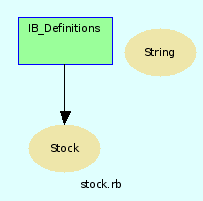

|  |
# Die Klasse Stock ist die MutterKlasse für Chart, Account und Ticker.
Modul IB_Definitions
Die Methoden dieses Moduls bündeln den Zugang zu den ib-spezifischen Einstellungen
Aus der yaml-Datei werden folgende Daten verarbeitet:
160 ib: 161 underlying: gbm <--- Hier Eintrag der TWS im Underlying-Modus eintragen 162 symbol: fgbm <--- Hier den konstanten Teil aus dem Symbol-Modus eintragen 163 exchange: dtb <--- Die Börse 164 contract: 305 <--- Das ist der default-Kontrakt. 165 backtestintervall: [ 1203, 304 , 604 , 904, 1204 ]
Required Files
- pp
- yaml
- stdExt
- optparse
- pp